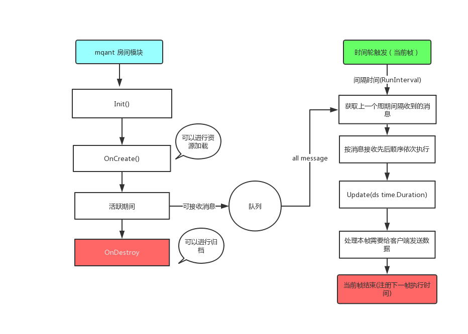

概述
在游戏开发中很多场景都会用到房间模型，例如棋牌的桌子匹配、聊天室等等。除了游戏以为很多业务场景都可以利用房间模式来解决。
场景举例
棋牌房间分配
将在线玩家匹配到同一个房间牌桌上进行游戏
游戏副本
游戏副本也可以设计为一个一个的房间
在线聊天室(直播)
为每一个主播创建一个房间,用户要跟主播互动就进入到对应的房间即可
房间模块解决的问题
[!TIP|style:flat|label:解决多线程资源资源抢占的问题|iconVisibility:hidden] 通常多个客户端用户请求时序是不可控的,如果不做管控当两条消息在同一个时间(间隔可能小于10ms)到达服务器， 那么就会出现多线程并行抢占资源的问题，导致游戏逻辑混乱。
解决方案
引入消息队列,将请求消息串行化。解决了资源锁的问题,同时在开发过程中完全不需要考虑消息并发的问题,所有指令都是串行执行的。
房间模块生命周期
